Профессия корпоративного психолога — это востребованное направление в сфере организационной и практической психологии, ориентированное на решение задач в корпоративной среде. Специалисты, прошедшие профессиональную переподготовку, помогают компаниям в психологическом консультировании, повышении мотивации персонала и улучшении корпоративного климата. Мы составили рейтинг программ, где обучение проводится в дистанционном формате, что позволяет совмещать обучение с работой. Курсы включают освоение профессиональных навыков и методов организационного консультирования, направлены на развитие компетенций и получение квалификации корпоративных психологов. Выпускники получают диплом установленного образца после успешного прохождения курсов.
Информация обновлена:
ТОП онлайн-курсов обучения по бизнес-психологии
- 🏆 Корпоративный психолог – Московский институт психологии (по промокоду kursy скидка 🎁 10%)
- 🏆 Психолог бизнес-консультант. Коуч — Московский институт психологии (по промокоду kursy скидка 🎁 10%)
- 🏆 Корпоративный психолог – Московская Бизнес Академия (по промокоду onlinekursy скидка 🎁 10%)
- Психология в бизнесе – Московская Бизнес Академия (по промокоду onlinekursy скидка 🎁 10%)
- Бизнес-психология — Smart
- Психолог-консультант с расширенной подготовкой по корпоративной психологии – НАДПО (по промокоду onlinekursy действует скидка 🎁 5%)
- «Бизнес-психология» с присвоением квалификации «Бизнес-тренер» – НАДПО (по промокоду onlinekursy действует скидка 🎁 5%)
- «Корпоративная психология» с присвоением квалификации «Корпоративный психолог» – НАДПО (по промокоду onlinekursy действует скидка 🎁 5%)
- Бизнес-психология в цифровой среде – Рsychodemia
- Корпоративный психолог – МИПО (по промокоду onlinekursy действует скидка 🎁 10% )
- Бизнес-психология — МШПП
- Коучинг и психологическое бизнес-консультирование – MITM
- Бизнес-психолог – МИПО Психология
- Психолог-консультант с подготовкой по корпоративной психологии – НЦРДО (по промокоду onlinekursy действует скидка 🎁 5%)
- Корпоративная психология с присвоением квалификации «Корпоративный психолог» – НЦРДО (по промокоду onlinekursy действует скидка 🎁 5%)
- Психолог-консультант с подготовкой по корпоративной психологии – ЦАППКК (по промокоду onlinekursy действует скидка 🎁 5%)
- Роль корпоративного/социального психолога в бизнесе – Moscow Business School
- Обучение на бизнес-тренера и коуча – Skillbox
- Профессия Корпоративный психолог — МШП
- Бизнес-психология — АПОК
- Корпоративная психология с присвоением квалификации Корпоративный психолог – НЦПО
Отличительные преимущества каждой дистанционной программы обучения по бизнес психологии
| № | Курс и школа | Преимущества | Ссылка |
|---|---|---|---|
| 🥇 | Корпоративный психолог — МИП | Партнерство с ОППЛ, диплом с международным приложением, практические кейсы | Перейти |
| 🥈 | Психолог бизнес-консультант. Коуч — МИП | Фокус на коучинге и консультировании руководителей, международный диплом | Перейти |
| 🥉 | Корпоративный психолог — Московская Бизнес Академия | Гос. диплом, помощь в трудоустройстве, воркшопы и актуальные кейсы | Перейти |
| 4 | Психология в бизнесе — Московская Бизнес Академия | Для тимлидов и HR, диплом ФРДО, кейсы и бизнес-сценарии | Перейти |
| 5 | Бизнес-психология — Smart | MBA, поддержка центра карьеры, практика с клиентами | Перейти |
| 6 | Психолог-консультант — НАДПО | 2040 ч. практики, помощь HR, топ-3 по онлайн-качеству | Перейти |
| 7 | Бизнес-психология + Бизнес-тренер — НАДПО | Присвоение квалификации бизнес-тренера, обратная связь, гос. диплом | Перейти |
| 8 | Корпоративная психология — НАДПО | Цена от 28 100 ₽, диплом ФРДО, корпоративная психология | Перейти |
| 9 | Бизнес-психология в цифровой среде — Рsychodemia | Магистратура, практика в IT, международные преподаватели | Перейти |
| 10 | Корпоративный психолог — МИПО | Короткий срок — 5 мес, цена от 39 000 ₽, гос. диплом | Перейти |
| 11 | Бизнес-психология — МШПП | 2 диплома (вкл. MBA), 250 ч. супервизий, карьерный центр | Перейти |
| 12 | Коучинг и бизнес-консультирование — МИТУ | Выгодная рассрочка, гос. диплом, акцент на фасилитацию | Перейти |
| 13 | Бизнес-психолог — МИПО Психология | 2 диплома (психология + бизнес), проф. переподготовка | Перейти |
| 14 | Психолог-консультант — НЦРДО | 2680 ч., сильные преподаватели, HR-сопровождение | Перейти |
| 15 | Корпоративная психология — НЦРДО | Цена от 24 900 ₽, быстрый старт, гос. диплом, рассрочка 12 мес | Перейти |
| 16 | Психолог-консультант — ЦАППКК | HR-наставник, 15 мес., бессрочный доступ | Перейти |
| 17 | Роль корпоративного психолога — MBS | 2-дневный интенсив, удостоверение, кейсы, очное/дистанционное | Перейти |
| 18 | Обучение на коуча — Skillbox | Фокус на корпоративную культуру, Skillbox, известные преподаватели | Перейти |
| 19 | Профессия Корпоративный психолог — МШП | Начать практику до конца курса, гибкий формат, 38 000 ₽ | Перейти |
| 20 | Бизнес-психология — АПОК | Диплом ФРДО, гибкий график, поддержка преподавателей | Перейти |
| 21 | Корпоративная психология — НЦПО | Диплом, лицензия Минобр, скидка при оплате в день заявки | Перейти |
1. 🏆 Корпоративный психолог – Московский институт психологии
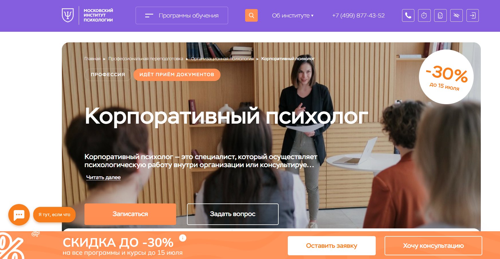
- ✅ Официальный сайт: mip.institute
- 💸 Цена: 97 925 ₽ (скидка 30%).
- 💳 Рассрочка: 8 200 ₽/мес на 12 месяцев без переплат.
- 📚 Формат: дистанционный формат: онлайн-лекции, тестирование, домашние задания, демонстрационные сессии, супервизии, доступ к библиотеке.
- ⏳ Продолжительность: 9 месяцев / 1260 часов.
- 📜 Документ: диплом о профессиональной переподготовке.
- 📝 Трудоустройство: диплом позволяет вести официальную деятельность в сфере корпоративных консультаций и психологии.
- 🔷 Для кого подходит курс: новичкам в психологии, практикующим без диплома, желающим совмещать обучение с работой, специалистам, ищущим повышение квалификации.
Особенности:
Программа дистанционного обучения позволяет получить новую квалификацию в сфере организационного консультирования и корпоративной психологии без отрыва от работы. Все этапы обучения проходят онлайн — студенты изучают дисциплины в удобное время, участвуют в вебинарах и выполняют практические задания. Образовательный процесс построен с учетом требований к современным специалистам, работающим в корпоративной среде. Московский институт психологии имеет лицензию и является партнером Общероссийской профессиональной психотерапевтической лиги, что подчеркивает высокое качество программ. После завершения курса выпускники получают диплом и могут официально консультировать организации. Обучение построено на реальных кейсах и дает навыки, которые востребованы в любых коллективах.
Чему учатся студенты:
- Применять методы организационной психологии для анализа корпоративной среды
- Проводить профессиональный отбор и оценку персонала
- Разрабатывать мотивационные стратегии для сотрудников
- Выстраивать эффективные коммуникации в рабочих коллективах
- Проводить индивидуальные и групповые консультации
- Разрабатывать и внедрять программы развития и адаптации персонала
- Оказывать психологическую поддержку в ситуациях изменений
Преподаватели:
- Додонова Ирина Викторовна — практикующий психолог (Транзактный анализ, IFS, EMDR, коучинг ICU и ICA), писатель, руководитель программы "Психологическое консультирование"
- Валуев Олег Сергеевич — консультирующий психолог экзистенциального направления, исследователь, автор более 150 научных статей, медиа-аналитик
Преимущества:
- Дистанционные образовательные форматы с гибким графиком
- Диплом с международным приложением, признанный в профессиональных сообществах
- Профессиональная переподготовка, дающая официальное право на консультации
- Поддержка кураторов и преподавателей с большим практическим опытом
- Возможность совмещать обучение с основной работой
- Погружение в реальные кейсы и задачи корпоративного психолога
- Доступ к профессиональному сообществу выпускников и коллег
- Развитие практических и организационных компетенций
Отзывы учеников:
Студенты часто подчеркивают, что обучение проходит в удобном дистанционном формате. Они отмечают, что преподаватели дают практические инструменты для работы с коллективами и развития персонала. Выпускники довольны качеством материалов и актуальностью тем, а также возможностью применять знания сразу после окончания обучения. Особо выделяют доступ к реальным кейсам и обратную связь от преподавателей.
Перейти на официальный сайт курса2. 🏆 Психолог бизнес-консультант. Коуч — Московский институт психологии
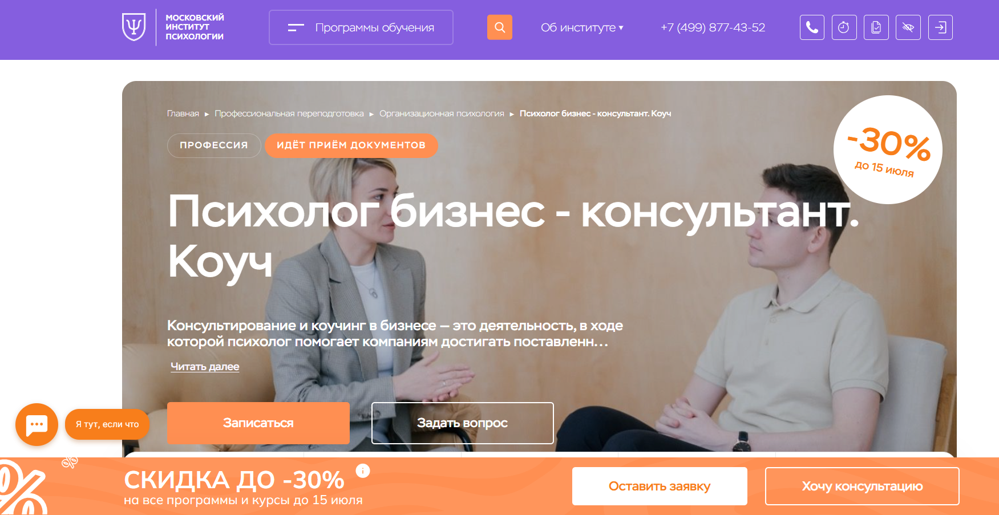
- ✅ Официальный сайт: mip.institute
- 💸 Цена обучения: 97 925 ₽ (со скидкой 30%).
- 💳 Рассрочка: 8 200 ₽/мес на 12 месяцев без переплат.
- 📚 Формат: дистанционный формат — видеолекции, тесты, домашние задания, вебинары, демонстрации и супервизии.
- ⏳ Продолжительность: 9 месяцев (1260 часов).
- 📜 Документ: диплом о профессиональной переподготовке с международным приложением.
- 📝 Трудоустройство: возможность начать частную практику или подтвердить квалификацию для работы в сфере консультирования.
- 🔷 Для кого подходит курс: начинающим без опыта, работающим психологам, желающим повысить квалификацию, и тем, кто хочет применять психологию в бизнесе.
Особенности:
Программа позволяет освоить профессию в удобном дистанционном формате без отрыва от текущей занятости. Курс ориентирован на развитие профессиональных компетенций для работы в корпоративной среде и бизнесе. Студенты учатся консультировать организации, формировать здоровый психологический климат и внедрять инструменты коучинга. Выпускники получают диплом, дающий право на официальную деятельность в сфере психологического консультирования. Учебный процесс включает работу с реальными кейсами, регулярную обратную связь и доступ к профессиональному сообществу. Институт сотрудничает с ОППЛ, что подтверждает высокое качество образования и открывает возможности для карьерного роста.
Чему учатся студенты:
- Определять и устранять проблемы в корпоративной культуре
- Проводить психологическое консультирование руководителей и команд
- Применять коучинговые методы в бизнес-среде
- Анализировать и улучшать бизнес-процессы с психологической точки зрения
- Разрабатывать стратегии адаптации компаний к изменениям
- Управлять конфликтами и повышать мотивацию сотрудников
- Создавать индивидуальные планы развития для персонала
Преподаватели:
- Додонова Ирина Викторовна — практикующий психолог, специалист по транзактному анализу, EMDR, коучинг (ICU, ICA), автор книг, руководитель программы.
- Валуев Олег Сергеевич — консультирующий психолог, разработчик методик, исследователь, автор более 150 научных публикаций, медиа-аналитик.
Преимущества:
- Удобный дистанционный формат обучения
- Диплом с международным приложением
- Поддержка куратора и профессионального сообщества
- Реальные кейсы и практические задания
- Партнерство с ОППЛ
- Подходит для совмещения с работой
- Развитие ключевых профессиональных навыков в сфере корпоративной психологии
- Программа направлена на повышение эффективности бизнеса через психологические инструменты
Отзывы учеников:
Студенты хвалят курс за практическую направленность, профессионализм преподавателей и структурированность материала. Особенно отмечают возможность совмещать обучение с работой и ценность полученных знаний в консультировании и коучинге.
Перейти на официальный сайт курса3. 🏆 Корпоративный психолог – Московская Бизнес Академия
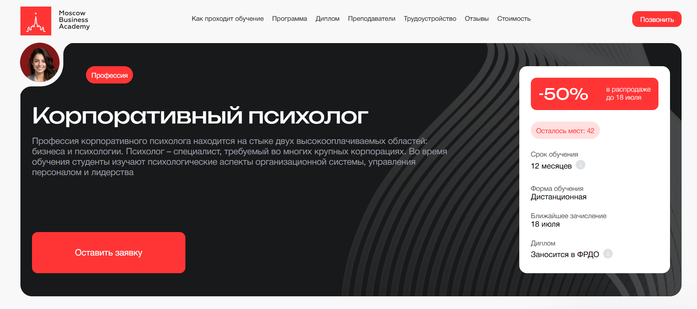- ✅ Официальный сайт: moscow.mba
- 💸 Цена: 116 496 ₽ со скидкой 50%.
- 💳 Рассрочка: 4 854 ₽ в месяц доступна на 24 месяца, первый платеж — через месяц.
- 📚 Формат: дистанционные лекции, воркшопы, итоговый проект, индивидуальные задания, поддержка кураторов.
- ⏳ Продолжительность: 12 месяцев.
- 📜 Документ: диплом о профессиональной переподготовке с внесением в ФРДО.
- 📝 Трудоустройство: помощь в создании портфолио, составлении резюме, прохождении собеседований и выборе вакансий.
- 🔷 Для кого подходит курс: психологам, HR-специалистам, коучам, консультантам, а также тем, кто хочет сменить сферу и освоить навыки корпоративной психологии.
Особенности:
Программа построена на применении дистанционных технологий и ориентирована на формирование прикладных навыков, востребованных в сфере корпоративных психологов. Удобный дистанционный формат обучения позволяет совмещать учебу с работой, а доступ к платформе открыт из любой точки мира. Курс включает реальные кейсы и проекты, приближенные к задачам бизнеса. Студенты осваивают методы диагностики, фасилитации, корпоративного консультирования и коучинга. Поддержка кураторов и обратная связь от преподавателей обеспечивают комфортный образовательный процесс. Завершение курса подтверждается дипломом государственного образца. Программа актуализирована в 2025 году, что гарантирует соответствие современным требованиям рынка.
Чему учатся студенты:
- Изучать основы организационной и бизнес-психологии
- Проводить психологические тренинги и консультации
- Применять методы диагностики и фасилитации в корпоративной среде
- Разрабатывать стратегии по улучшению психологического климата в коллективе
- Работать с конфликтами и повышать мотивацию сотрудников
- Повышать эффективность корпоративной культуры через эмоциональный интеллект
Преподаватели:
- Мария Егиазарова — выпускник МГУ, кафедра социальной психологии, действующий бизнес-психолог и консультант
- Валентина Катаниди — карьерный консультант, более 3500 часов тренингов, полуфиналист «Лиги лекторов»
- Василий Ильин — бизнес-тренер и психолог, автор программ по управлению стрессом и мотивацией
Преимущества:
- Обучение проводится полностью дистанционно
- Официальный диплом государственного образца
- 70% программы — практические задания и воркшопы
- Актуальное обновление курса – 2025 год
- Бонусные модули по психологии здоровья и деловым переговорам
- Возможность досрочного завершения курса
- Помощь в трудоустройстве и развитии карьеры
- Обучение ведут практикующие специалисты
Отзывы учеников:
Студенты отмечают удобный график, возможность совмещать обучение с работой и постоянную поддержку со стороны кураторов. Положительно оцениваются практические задания, доступность преподавателей и реальная помощь в поиске работы после завершения курса.
Перейти на официальный сайт курса4. Психология в бизнесе – Московская Бизнес Академия
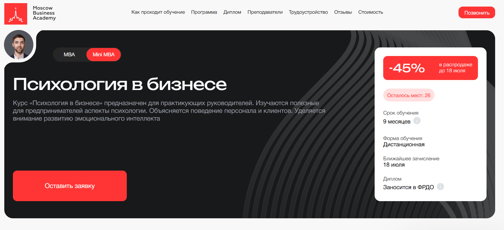
- ✅ Официальный сайт: moscow.mba
- 💸 Цена: 227 095 ₽ (со скидкой 45%).
- 💳 Рассрочка: 9 462 ₽ / мес на 24 месяца, первый платёж — через месяц.
- 📚 Формат: дистанционный формат, видеоуроки, практические задания, воркшопы, вебинары, сопровождение кураторов.
- ⏳ Продолжительность: 9 месяцев.
- 📜 Документ: диплом о профессиональной переподготовке, вносимый в ФРДО.
- 📝 Трудоустройство: помощь в составлении портфолио, подготовка к собеседованиям, карьерные консультации, рекомендации по выходу на фриланс.
- 🔷 Для кого подходит курс: руководители, тимлиды, HR-специалисты, корпоративные психологи, специалисты по развитию персонала и организационной культуре.
Особенности:
Курс предлагает глубокую подготовку в области корпоративной психологии с применением дистанционных технологий. Программа подойдет тем, кто стремится повысить квалификацию в сфере управления персоналом и корпоративного консультирования. Учебный процесс ориентирован на практические навыки и решение реальных задач, а доступ к образовательной платформе сохраняется на всём протяжении курса. Студенты учатся проводить психологическое консультирование, управлять командой и улучшать организационную среду компании. Занятия проходят в удобном формате, позволяя совмещать обучение с работой. После окончания курса выпускники получают диплом установленного образца и могут претендовать на новые карьерные позиции. Программа включает современные подходы, соответствующие требованиям профессиональных стандартов в сфере организационной психологии.
Чему учатся студенты:
- Оценивать и развивать корпоративную культуру
- Применять методы организационного консультирования
- Оказывать психологическую поддержку сотрудникам
- Изучать поведение персонала и клиентов
- Улучшать мотивацию сотрудников без повышения стресса
- Проводить диагностику и фасилитацию изменений
- Применять психологические техники в управлении
- Разрабатывать стратегии развития эффективных команд
Преподаватели:
- Алексей Матушкин — магистр инноваций и социологии, преподаватель, член международной ассоциации IATEFL, опыт более 12 лет.
- Ведерникова Надежда — практикующий член Всероссийской психотерапевтической лиги, более 20 лет в сфере управления маркетингом и консалтинга.
- Ангелина Шам — кандидат наук, корпоративный бизнес-психолог, автор книг по коммуникации, опыт в коучинге и бизнесе.
Преимущества:
- Диплом вносится в ФРДО и признается работодателями
- Возможность освоить профессию корпоративного психолога с нуля
- Обучение проходит в дистанционном формате с удобным графиком
- Курс охватывает ключевые аспекты организационной психологии
- Реальные кейсы и практические задания на основе бизнес-ситуаций
- Профессиональное сопровождение кураторов и обратная связь от преподавателей
- Актуализированная программа — последнее обновление 2025 года
- Возможность вернуть 13% от стоимости через налоговый вычет
Отзывы учеников:
Студенты чаще всего отмечают сильный преподавательский состав, гибкий формат, большое количество практики и возможность совмещать обучение с работой. Отзывы подчеркивают высокий уровень преподавания, доступность материалов и помощь кураторов в процессе обучения.
Перейти на официальный сайт курса5. Бизнес-психология — Институт Smart
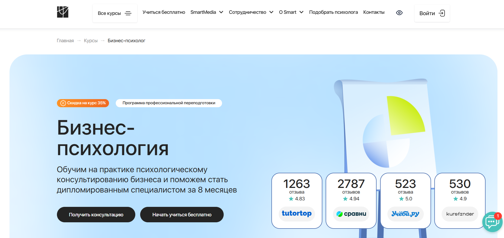- ✅ Официальный сайт: smart-inc.ru
- 💸 Цена: от 99 950 ₽ (со скидкой -35%).
- 💳 Рассрочка: 3, 6, 12 или 24 месяца от 8329 ₽/мес.
- 📚 Формат: дистанционный формат: видеоуроки, домашние задания, супервизии, практикумы, онлайн-сессии «вопрос-ответ».
- ⏳ Продолжительность: от 8 месяцев (600–941 академических часов).
- 📜 Документ: диплом о профессиональной переподготовке, диплом MBA (Чехия/Гамбург), диплом установленного образца.
- 📝 Трудоустройство: Центр карьеры помогает с практикой, дает клиентов, проводит менторинг и консультации.
- 🔷 Для кого подходит курс: для желающих получить новую квалификацию, руководителей, коучей, специалистов без психологического образования.
Особенности:
Программа разработана для тех, кто хочет освоить профессию корпоративного психолога в дистанционном формате. Обучение включает применение дистанционных технологий и доступно в любом удобном графике. Студенты получают практические навыки организационного консультирования и работают с реальными кейсами. В рамках курса проводится активная практика в корпоративной среде, доступ к образовательным материалам предоставляется 24/7. Слушатели получают психологическую поддержку от менторов и кураторов, развивают навыки оценки персонала и повышения мотивации сотрудников. Институт сотрудничает с ведущими профессиональными ассоциациями, а диплом соответствует стандартам ФРДО.
Чему учатся студенты:
- Проводить психологическое консультирование в корпоративной среде
- Осваивать методы повышения мотивации персонала
- Разрешать конфликты в организациях
- Вести переговоры и налаживать коммуникации внутри коллектива
- Анализировать рабочие процессы и улучшать корпоративную культуру
- Работать с руководителями и первыми лицами компаний
- Применять современные методы организационного развития
Преподаватели:
- Светлана Варнавская — коуч МСС ICF, более 4000 часов практики, эксперт в трансформационном коучинге, КПТ, ментор и супервизор.
Преимущества:
- Удобный дистанционный формат обучения с доступом к платформе 24/7
- Возможность совмещать обучение с работой и личной жизнью
- Поддержка менторов и кураторов в процессе обучения
- Профессиональная переподготовка с выдачей дипломов государственного образца
- Возможность участия в сообществе выпускников и профессиональных мероприятиях
- Получение практического опыта через работу с клиентами
- Гарантированная помощь в трудоустройстве после окончания обучения
- Психологическое сопровождение и карьерные консультации
Отзывы учеников:
Студенты отмечают практическую направленность обучения, квалификацию преподавателей и качественную поддержку. Особенно выделяют удобный формат, возможность дистанционного обучения и реальные кейсы в рамках курса. Курсанты также подчеркивают ценность диплома и доступ к клиентской базе во время и после обучения.
Перейти на официальный сайт курса6. Психолог-консультант с расширенной подготовкой по корпоративной психологии – Национальная академия дополнительного профессионального образования
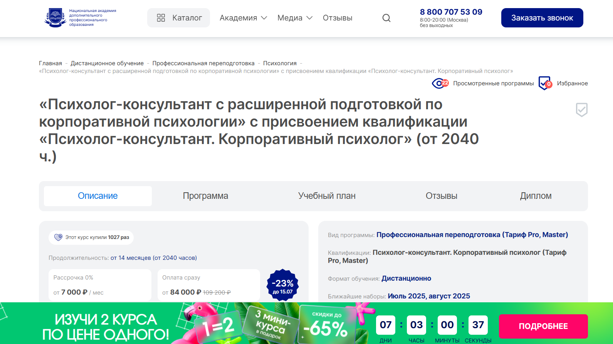
- ✅ Официальный сайт: nadpo.ru
- 💸 Цена: от 84 000 ₽ (скидка 23%, вместо 109 200 ₽)
- 💳 Рассрочка: от 7 000 ₽/мес, до 36 месяцев, без переплат
- 📚 Формат: дистанционные курсы, включает видеолекции, практические задания, доступ к библиотекам ЛитРес и Библиоклуб
- ⏳ Продолжительность: от 14 месяцев (от 2040 часов)
- 📜 Документ: диплом о профессиональной переподготовке установленного образца
- 📝 Трудоустройство: поддержка HR-наставников и предложения от партнёров ещё во время обучения
- 🔷 Для кого подходит курс: для тех, кто хочет получить квалификацию «корпоративный психолог» и консультировать в бизнес-среде
Особенности:
Программа разработана в соответствии с ФГОС и включает более 30% практических занятий, что позволяет освоить профессиональные навыки в области корпоративной психологии. Слушатели проходят обучение в удобном дистанционном формате с гибким графиком. Практика начинается сразу, что способствует быстрому освоению профессии. Выпускники смогут применять полученные знания в любой организации, частной практике или на онлайн-платформах. Образование соответствует профессиональным стандартам, а диплом даёт право работать организационным психологом. Национальная академия входит в ТОП-3 по качеству онлайн-обучения, обеспечивая высокую эффективность дистанционного обучения.
Чему учатся студенты:
- Проводить психологическое консультирование в корпоративной среде
- Оценивать и улучшать мотивацию персонала
- Организовывать тренинги и семинары для команд
- Помогать в адаптации сотрудников и предотвращать эмоциональное выгорание
- Применять методы организационного консультирования
- Анализировать психологический климат и внутренние процессы в компании
Преподаватели:
- На официальном сайте персоналии не указаны. Обучение ведут опытные практикующие специалисты в сфере организационной психологии и консультирования.
Преимущества:
- Возможность совмещать обучение с работой благодаря удобному формату
- Доступ к цифровым библиотекам и учебным материалам без ограничений
- Гарантированное трудоустройство после завершения курса
- Поддержка наставников и сопровождение по карьерному треку
- Фокус на практических навыках и реальных кейсах из бизнеса
- Программа соответствует госстандартам профессионального образования
- 0% рассрочка до 36 месяцев без переплат
Отзывы учеников:
Студенты отмечают высокий уровень организации дистанционного формата, полезность практических заданий и доступность материалов. Многие подчеркивают, что курс помогает освоить профессию с нуля и начать работать уже в процессе обучения.
Перейти на официальный сайт курса7. «Бизнес-психология» с присвоением квалификации «Бизнес-тренер» – Национальная академия дополнительного профессионального образования

- ✅ Официальный сайт: nadpo.ru
- 💸 Цена: от 67 100 ₽ (скидка до 23% )
- 💳 Рассрочка: от 5 592 ₽ в месяц, на 24 или 36 месяцев, 0%
- 📚 Формат: дистанционные занятия, видеоуроки, практикумы, воркшопы, кейсы, книги и фильмы, обратная связь от преподавателей
- ⏳ Продолжительность: от 5 месяцев (от 625 часов)
- 📜 Документ: диплом о профессиональной переподготовке, соответствует ФГОС
- 📝 Трудоустройство: сопровождение HR-экспертов, предложения от партнёров во время обучения
- 🔷 Для кого подходит курс: начинающим специалистам, тем, кто меняет сферу, работающим корпоративным психологам и желающим получить квалификацию бизнес-тренера
Особенности:
Образование проходит в дистанционном формате, что особенно удобно для совмещения с работой. Программа направлена на развитие практических и профессиональных компетенций в области корпоративной психологии и организационного консультирования. Уделяется внимание работе в корпоративной среде, развитию навыков оценки персонала и консультирования. Более 30% курса — это практические занятия, что позволяет слушателям отрабатывать полученные знания в реальных кейсах уже во время прохождения обучения. Студенты изучают методы повышения мотивации персонала, улучшения психологического климата и эффективности бизнеса. Завершившие курс получают официальный диплом, действующий на всей территории РФ. Программа обучения отвечает требованиям подготовки корпоративных психологов и ориентирована на реальные задачи бизнеса.
Чему учатся студенты:
- Проводить психологическое консультирование в корпоративной среде
- Повышать эффективность коммуникаций и управлять конфликтами
- Оценивать мотивацию сотрудников и формировать устойчивые команды
- Применять современные методы организационного развития
- Проводить тренинги и развивающие семинары для сотрудников и руководителей
- Использовать практические инструменты в дистанционном обучении
Преподаватели:
- Зотова Мария Юрьевна — магистр психоаналитического бизнес-консультирования (НИУ ВШЭ), основатель НАДПО, автор обучающих программ
- Тарасов Сергей Васильевич — кандидат психологических наук, доцент, с опытом с 2000 года
- Егорова Наталья Николаевна — кандидат психологических наук, 22 года научно-практической деятельности
- Челнокова Ирина Александровна — кандидат психологических наук, член Российской ассоциации КПТ
- Санжапова Эльмира Викторовна — кандидат педагогических наук, доцент, опыт работы с 2005 года
Преимущества:
- Удобный дистанционный формат с гибким графиком обучения
- Бесплатный доступ к библиотекам ЛитРес и Библиоклуб
- Практика начинается с первых недель курса
- Диплом выдается по окончании и соответствует госстандарту
- Групповые супервизии и разборы кейсов с экспертами
- Обратная связь и консультации от преподавателей
- Возможность совмещать обучение с работой
- Развитие востребованных профессиональных навыков в сфере корпоративной психологии
Отзывы учеников:
Студенты высоко оценивают практическую направленность курса, профессионализм преподавателей и удобный дистанционный формат. Часто отмечают возможность совмещения обучения с основной работой, а также актуальность тем, связанных с корпоративной психологией и консультированием. Многим помогли кейсы и тренировки в тройках, а доступ к библиотекам и консультации с преподавателями оказались полезным бонусом.
Перейти на официальный сайт курса8. «Корпоративная психология» с присвоением квалификации «Корпоративный психолог» – Национальная академия дополнительного профессионального образования
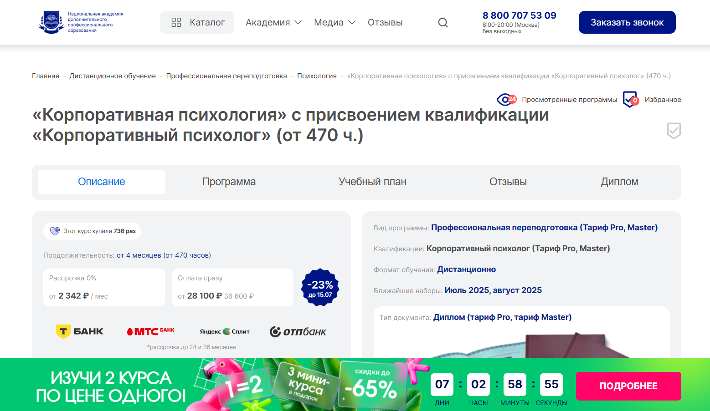- ✅ Официальный сайт: nadpo.ru
- 💸 Цена: от 28 100 ₽ ( скидка 23%)
- 💳 Рассрочка: 0%, срок до 36 месяцев, от 2 342 ₽ в месяц
- 📚 Формат: дистанционное обучение, видеолекции, задания, практика, тесты
- ⏳ Продолжительность: от 4 месяцев, от 470 часов
- 📜 Документ: диплом о профессиональной переподготовке, соответствует ФГОС
- 📝 Трудоустройство: консультации с HR-наставником, предложения от партнёров
- 🔷 Для кого подходит курс: для специалистов с высшим или средним профессиональным образованием, желающих освоить профессию в сфере корпоративной психологии
Особенности:
Образовательная программа нацелена на подготовку корпоративных психологов, способных решать задачи внутри организационной среды. Формат обучения полностью дистанционный, что удобно для тех, кто хочет совмещать обучение с работой. В курс входит более 30% практических занятий, бесплатный доступ к библиотекам, кешбэк и официальная рассрочка. Программа соответствует государственным стандартам и позволяет за короткий срок получить новую квалификацию. Выпускники смогут работать как внутри компаний, так и в частной практике. После окончания курса выдается диплом, действующий на всей территории РФ. Студенты обучаются в комфортном ритме и получают поддержку на всех этапах. Академия входит в ТОП-3 организаций по качеству онлайн-образования.
Чему учатся студенты:
- Проводить психологическое консультирование сотрудников
- Осваивать методы урегулирования конфликтов в коллективе
- Проводить адаптацию новых сотрудников
- Развивать мотивацию персонала и корпоративную культуру
- Анализировать эмоциональное состояние работников
- Проводить групповые тренинги и семинары
- Создавать комфортную организационную среду
- Позиционировать себя как специалиста в сфере корпоративных решений
Преподаватели:
- Тарасов Сергей Васильевич — кандидат психологических наук, доцент, практикующий специалист с 2000 года
- Егорова Наталья Николаевна — кандидат психологических наук, опыт работы 22 года
- Челнокова Ирина Александровна — кандидат психологических наук, член Российской ассоциации КПТ, работает с 2008 года
- Санжапова Эльмира Викторовна — кандидат педагогических наук, доцент, с практикой с 2005 года
Преимущества:
- Удобный дистанционный формат обучения с гибким графиком
- Поддержка HR-экспертов и реальная помощь в трудоустройстве
- Доступ к учебным материалам и библиотекам ЛитРес и БиблиоКлуб
- Более 30% практики в процессе обучения
- Подходит для специалистов и организаций
- Программа соответствует ФГОС
- Диплом государственного образца с правом на частную практику
- Возможность совмещать обучение с работой без потери качества
Отзывы учеников:
Выпускники академии часто отмечают гибкий дистанционный формат, качественную учебную платформу и поддержку кураторов. Среди плюсов: наличие практики, понятная подача материала, оперативная обратная связь и возможность трудоустройства ещё в процессе обучения.
Перейти на официальный сайт курса9. Бизнес-психология в цифровой среде – Московский институт психоанализа - Рsychodemia
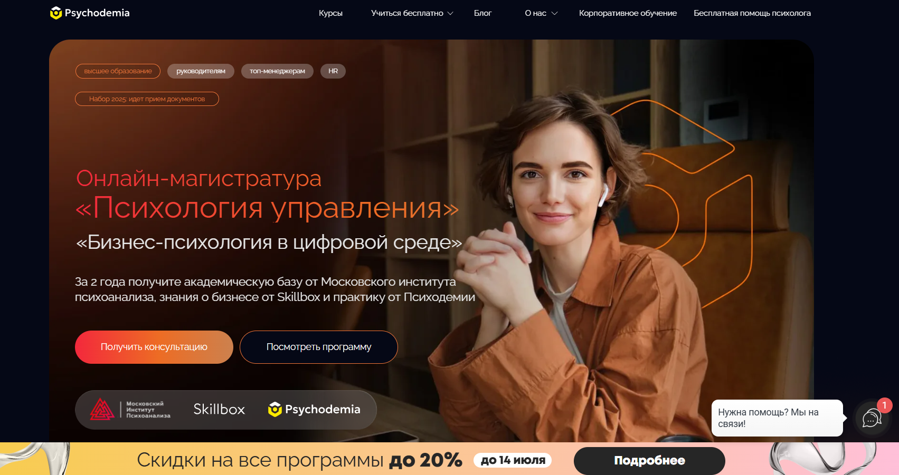
- ✅ Официальный сайт: psychodemia.ru
- 💸 Цена: от 160 000 ₽. При оплате через образовательный кредит – от 240 ₽ в месяц.
- 💳 Рассрочка: от 240 ₽ в месяц , доступна с господдержкой, ставка 3% годовых.
- 📚 Формат: удобный дистанционный формат: видеолекции, кейсы, тренинговые модели, практика и дипломный проект.
- ⏳ Продолжительность: 2 года.
- 📜 Документ: диплом магистра государственного образца, удостоверение о повышении квалификации, сертификат Skillbox.
- 📝 Трудоустройство: практика в российских IT-компаниях и возможность применять знания на своем месте работы.
- 🔷 Для кого подходит курс: для руководителей, HR, специалистов с высшим образованием, желающих пройти профессиональную переподготовку и освоить профессию корпоративного психолога.
Особенности:
Программа нацелена на освоение профессиональных навыков в корпоративной психологии и организационном консультировании. Обучение построено на применении дистанционных образовательных технологий и ориентировано на развитие практических компетенций в корпоративной среде. Студенты проходят обучение у экспертов, работающих в крупных IT-компаниях, и получают сразу три документа, подтверждающих квалификацию. Возможность совмещать обучение с работой делает курс особенно привлекательным. Темы охватывают психологическое консультирование, мотивацию персонала и развитие корпоративной культуры. Все знания закрепляются на реальных кейсах бизнеса. Защита магистерской диссертации проходит очно в Москве.
Чему учатся студенты:
- Проводить оценку компетенций персонала и мотивацию сотрудников
- Применять коучинговые и психологические инструменты в бизнесе
- Создавать внутренние системы обучения и коммуникации в компаниях
- Разрешать конфликты в команде и управлять корпоративной культурой
- Анализировать поведение сотрудников и оптимизировать рабочие процессы
- Проводить маркетинговые исследования и адаптировать подходы под IT-команды
Преподаватели:
- Гули Базарова — канд. психол. наук, директор школы практической психологии, executive-коуч, амбассадор бизнес-школы «Сколково»
- Тахир Базаров — доктор психол. наук, профессор МГУ, президент Ассоциации бизнес-психологов России
- Александр Крымов — канд. психол. наук, преподаватель МИП, автор более 100 публикаций по управлению
- Максим Цветков — клинический и семейный психолог, преподаватель МИП, специалист психиатрической больницы №3 г. Москвы
Преимущества:
- Обучение проходит в удобном дистанционном формате с гибким графиком
- Программа ориентирована на развитие практических навыков и организационной среды
- Прохождение практики в ведущих компаниях IT-сферы
- Доступ к кейсам и проектам из реального бизнеса
- Получение трех документов: диплом магистра, удостоверение и сертификат
- Поддержка кураторов и индивидуальный подход к обучающимся
- Гарантированная актуальность знаний в корпоративной и психологической практике
- Возможность совмещать обучение с профессиональной деятельностью
Отзывы учеников:
Выпускники высоко оценивают программу за практическую направленность, профессиональный состав преподавателей и возможность совмещать учебу с работой. Особенно отмечают удобный формат, насыщенность кейсами и реальную пользу в сфере управления персоналом и развития корпоративных команд.
Перейти на официальный сайт курса10. Корпоративный психолог – Московский Институт Профессионального Образования
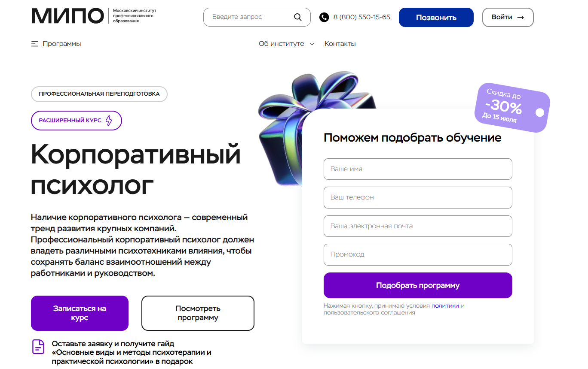
- ✅ Официальный сайт: mipo.msk.ru
- 💸 Цена: от 39 063 ₽ до 63 202 ₽ (со скидкой до 30%).
- 💳 Рассрочка: до 24 месяцев, от 1 628 ₽/мес.
- 📚 Формат: удобный дистанционный: видеолекции, вебинары, тесты, практические задания, разбор кейсов, работа с кураторами.
- ⏳ Продолжительность: 5 месяцев / 432 часа.
- 📜 Документ: диплом о профессиональной переподготовке с регистрацией в ФРДО.
- 📝 Трудоустройство: повышение квалификации, смена профессиональной деятельности, выход на рынок труда.
- 🔷 Для кого подходит курс: для начинающих с нуля, действующих специалистов без диплома, тех, кто хочет освоить навыки для себя или для применения в корпоративной среде.
Особенности:
Курс предлагает комплексную программу по корпоративной психологии с фокусом на развитие профессиональных навыков и компетенций в сфере психологического консультирования и организационного консультирования. Обучение проходит в дистанционном формате, что позволяет совмещать обучение с работой и другими делами. Участники изучают методы оценки персонала, мотивацию сотрудников, адаптацию в корпоративной среде и управление организационным развитием. В программе — поддержка менторов и методистов, обратная связь от преподавателей и официальный диплом, зарегистрированный в ФРДО. Все учебные материалы доступны онлайн. После окончания курса выпускники смогут проводить психологическую поддержку в компаниях и влиять на эффективность корпоративных процессов.
Чему учатся студенты:
- Проводить психологическое консультирование в корпоративной среде
- Оценивать и развивать персонал, проводить психодиагностику
- Применять методы организационного консультирования
- Разрабатывать программы адаптации и мотивации сотрудников
- Работать с психологическим климатом в коллективе
- Использовать практические инструменты для улучшения коммуникации
Преподаватели:
- Байновский Дмитрий — клинический психолог, автор более 2000 вебинаров
- Шушкина Людмила — семейный психолог, автор книг по практической психологии
- Рыбальченко Наталья — философ, психолог, преподаватель МГУ
- Егиазарова Мария — бизнес-психолог, выпускница кафедры социальной психологии МГУ
- Бербер Наталья — кандидат психологических наук, арт-терапевт, НЛП-практик
- Цапяло Алла — практикующий психолог и сексотерапевт
Преимущества:
- Обучение полностью онлайн — гибкий и удобный формат
- Поддержка куратора, менторов и методистов на протяжении всего курса
- Доступ к видеоматериалам, записям вебинаров и дополнительным материалам
- Выдается диплом установленного образца с регистрацией в ФРДО
- Программа включает реальные кейсы и практическую отработку
- Возможность освоить профессию и начать работать в новой сфере
- Актуальные знания по корпоративной культуре, адаптации и мотивации персонала
- Подходит для профессионального роста и смены карьеры
Отзывы учеников:
Студенты особенно выделяют высокий уровень преподавателей, структурированную программу и поддержку кураторов. Отмечают удобный формат дистанционного обучения и ценность практических заданий. Большинство выпускников говорят об уверенном применении знаний уже во время прохождения курса и возможности начать карьеру сразу после завершения.
Перейти на официальный сайт курса11. Бизнес-психология – Московская школа практической психологии
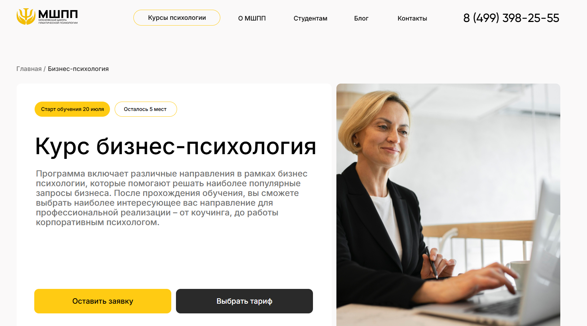- ✅ Официальный сайт: mspp.online
- 💸 Цена: от 155 000 ₽
- 💳 Рассрочка: от 4 350 ₽/мес от 3 до 36 месяцев, возможна без участия банков
- 📚 Формат: удобный дистанционный формат: видеоуроки, практические задания, групповые супервизии, чаты с наставником, семинары, живые вебинары
- ⏳ Продолжительность: 9 месяцев, 900–1020 академических часов
- 📜 Документ: диплом о профессиональной переподготовке, при расширенном пакете — международный диплом MBA
- 📝 Трудоустройство: помощь от карьерного центра — от выбора компании до прохождения испытательного срока
- 🔷 Для кого подходит курс: для начинающих без психологического образования, практикующих специалистов, студентов и тех, кто хочет освоить профессию корпоративного психолога
Особенности:
Программа разработана при участии более 40 экспертов и ориентирована на подготовку профессионалов в сфере корпоративной психологии. Студенты получают доступ к современным образовательным платформам, проходят практику в мини-группах и осваивают навыки, необходимые для консультирования в корпоративной среде. Обучение позволяет совмещать учебу с работой за счёт гибкого графика и поддержки кураторов. Программа подходит для дистанционного прохождения, что открывает доступ к обучению из любой точки мира. В курс включены актуальные темы по организационному консультированию и управлению конфликтами. По окончании обучения выпускники получают официальные дипломы и могут работать как в России, так и за рубежом.
Чему учатся студенты:
- Проводить психологическое консультирование в корпоративной среде
- Разрешать конфликты и управлять командной мотивацией
- Применять методы организационной психологии и коучинга
- Владеть навыками эффективной самопрезентации и деловых переговоров
- Проводить бизнес-тренинги и развивать корпоративную культуру
- Оказывать психологическую поддержку персоналу
Преподаватели:
- Программа разработана 43 практикующими экспертами в сфере психологии и психотерапии
- Все преподаватели имеют действующую практику и опыт в корпоративной сфере
Преимущества:
- Получение двух дипломов: государственный и международный MBA
- Глубокая практика: 250 часов на супервизиях, тройках и реальных кейсах
- Карьерный центр помогает в поиске работы и прохождении собеседований
- Поддержка 24/7 и персональный ментор в процессе обучения
- Форматы занятий включают лекции, онлайн-практикумы, очные встречи и домашние задания
- Разнообразие модулей: от эмоционального интеллекта до антикризисного консультирования
- Возможность получить налоговый вычет в 13%
- Клуб выпускников и сообщество единомышленников
Отзывы учеников:
Студенты чаще всего отмечают удобный формат дистанционного обучения, насыщенную практическую часть и профессионализм преподавателей. Высоко оценивают обратную связь и заботу со стороны кураторов, а также актуальность знаний для сферы бизнеса. Многие выпускники уже в процессе курса начинают применять полученные навыки в работе.
Перейти на официальный сайт курса12. Коучинг и психологическое бизнес-консультирование – Московский институт технологий и управления

- ✅ Официальный сайт: mitm.institute
- 💸 Цена обучения: со скидкой 30% — 116 160 ₽
- 💳 Рассрочка: 13 830 ₽/мес, со скидкой 30% — 9 680 ₽/мес, беспроцентная на 12 месяцев, в том числе через Тинькофф Банк.
- 📚 Формат: дистанционные видеолекции, домашние задания, воркшопы, супервизии, чат с менторами.
- ⏳ Продолжительность: 1 год, 1100 академических часов.
- 📜 Документ: диплом о профессиональной переподготовке государственного образца.
- 📝 Трудоустройство: выпускники получают профессиональные компетенции, востребованные в сфере корпоративной психологии и коучинга.
- 🔷 Для кого подходит курс: для корпоративных психологов, HR-специалистов, бизнес-консультантов, коучей, менеджеров и руководителей.
Особенности:
Курс ориентирован на тех, кто хочет освоить профессию в сфере корпоративного коучинга и организационного консультирования. Обучение проходит в удобном дистанционном формате с гибким графиком, что позволяет совмещать обучение с работой. Студенты изучают прикладные аспекты психологического консультирования, изучают методы оценки персонала, мотивации сотрудников и повышения эффективности бизнеса. Поддержка куратора и взаимодействие с экспертами помогают адаптироваться к процессу обучения и успешно завершить курс. Образовательная программа разработана с учетом профессиональных стандартов и требований работодателей. Доступ к учебным материалам открыт до окончания курса, а программа включает не только теорию, но и практику в реальных кейсах корпоративной среды.
Чему учатся студенты:
- Проводить психологические консультации в корпоративной среде
- Применять инструменты коучинга для развития персонала
- Оценивать мотивацию сотрудников и управлять командной динамикой
- Использовать методы диагностики и фасилитации в работе с организациями
- Разрабатывать программы изменений и адаптации в компаниях
- Анализировать поведение и корпоративную культуру
- Повышать эффективность корпоративных команд через психологические подходы
Преподаватели:
- Лагунова Ирина Валерьевна — бизнес-тренер ISBT, член Ассоциации КПТ, опыт в обучении более 15 лет
- Латынцева Ольга Анатольевна — семейный психолог, эксперт на ТВ, более 10 лет практики
- Койфман Юлианна Евгеньевна — член ICPA, более 7 лет опыта в коучинге
Преимущества:
- Возможность освоить квалификацию корпоративного психолога дистанционно
- Гибкий учебный график — удобно совмещать с работой
- Поддержка кураторов и супервизоров на всех этапах обучения
- Выдается диплом государственного образца по завершению курса
- Доступ к профессиональному сообществу и менторскому сопровождению
- Программа адаптирована под требования рынка и работодателей
- Возможность возврата 13% от стоимости обучения через налоговый вычет
- Материалы разработаны экспертами с практическим опытом
Отзывы учеников:
Слушатели отмечают удобный дистанционный формат и насыщенность программы. Часто хвалят практическую направленность курса, сопровождение кураторов и высокое качество преподавания. Также ценят возможность совмещать обучение с работой без потери качества усвоения материала.
Перейти на официальный сайт курса13. Бизнес-психолог – Московский Институт Профессионального Образования
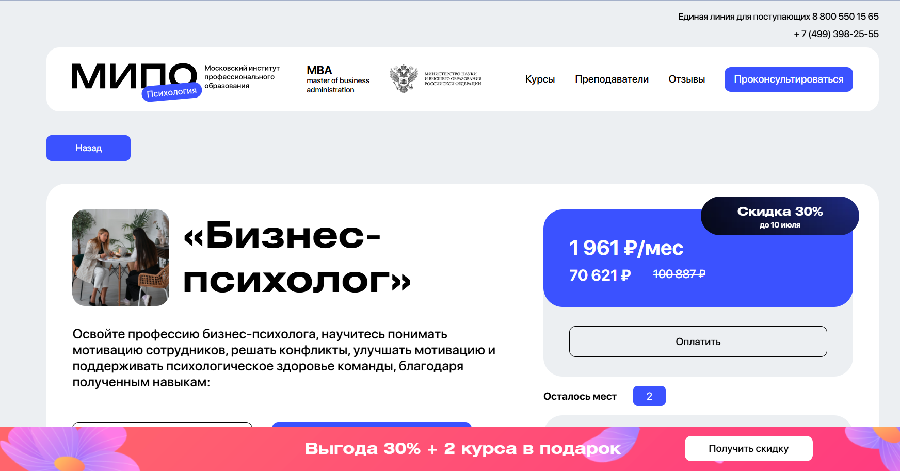
- ✅ Официальный сайт: mipoin.ru
- 💸 Цена: 70 621 ₽ (скидка 30% ).
- 💳 Рассрочка: от 1 961 ₽/мес.
- 📚 Формат: дистанционное обучение с применением видеолекций, тестов, заданий и онлайн-поддержки.
- ⏳ Продолжительность: 12 месяцев.
- 📜 Документ: два диплома о профессиональной переподготовке по квалификациям: «Социальная психология в бизнесе» и «Психология» (1160 и 998 часов соответственно).
- 📝 Трудоустройство: помогает получить квалификацию корпоративного психолога и улучшить позиции в профессиональной сфере.
- 🔷 Для кого подходит курс: для тех, кто стремится пройти профессиональную переподготовку, получить новые знания в сфере корпоративных психологов и развить компетенции в организационной среде.
Особенности:
Курс предлагает удобный дистанционный формат обучения, позволяющий совмещать учебу с работой. Образовательная программа направлена на развитие профессиональных навыков в области организационного консультирования и корпоративной психологии. Студенты осваивают методы психологического консультирования персонала, повышения мотивации сотрудников и создания эффективной команды. По завершении обучения выдаются официальные дипломы установленного образца. В рамках программы предусмотрены задания, помогающие применять полученные знания в реальных кейсах. Поддержка кураторов и индивидуальные консультации делают процесс освоения материала более результативным.
Чему учатся студенты:
- Понимать мотивацию персонала и улучшать психологический климат
- Решать конфликты в корпоративной среде
- Проводить психологическое консультирование в организациях
- Применять психологические инструменты в управлении коллективом
- Повышать эффективность корпоративных процессов через организационное развитие
Преподаватели:
- Список преподавателей не указан на официальном сайте. Рекомендуется уточнить на mipoin.ru или по телефону +7 (499) 398-25-55.
Преимущества:
- Удобный дистанционный формат обучения с гибким графиком
- Два диплома о профессиональной переподготовке
- Акцент на практических навыках и организационную психологию
- Возможность совмещать обучение с работой
- Программа включает психологическое консультирование и оценку персонала
- Подходит для специалистов, стремящихся к развитию в сфере корпоративной психологии
- Развитие компетенций в психологической поддержке и мотивации команд
- Официальные документы, подтверждающие квалификацию
Отзывы учеников:
Студенты МИПО отмечают удобство дистанционного формата, своевенную поддержку кураторов и практическую направленность заданий. Среди плюсов — высокая доступность материалов, возможность совмещать учебу с работой и получение официального диплома после прохождения курса.
Перейти на официальный сайт курса14. Психолог-консультант с подготовкой по корпоративной психологии – Национальный центральный институт развития дополнительного образования
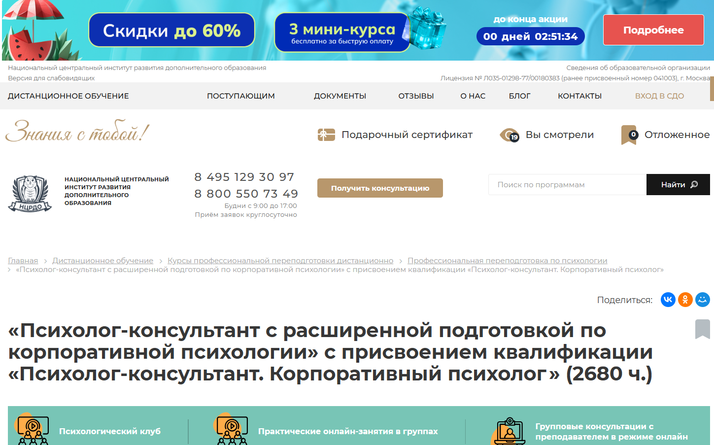
- ✅ Официальный сайт: ncrdo.ru
- 💸 Цена: 74 600 ₽ (вместо 96 900 ₽ )
- 💳 Рассрочка: 2 072 ₽/мес на 36 месяцев
- 📚 Формат: удобный дистанционный формат с вебинарами, лекциями, тестами, доступом к ЛитРес и Библиоклуб
- ⏳ Продолжительность: 15 месяцев (2680 часов)
- 📜 Документ: диплом о профессиональной переподготовке с присвоением квалификации
- 📝 Трудоустройство: помощь в развитии карьеры и HR-консультации
- 🔷 Для кого подходит курс: для специалистов, стремящихся стать корпоративным психологом или повысить квалификацию в этой области
Особенности:
Программа ориентирована на освоение профессии в сфере корпоративной психологии с упором на организационные и консультативные навыки. Курс проходит в дистанционном формате, позволяющем совмещать обучение с работой. Студенты получают доступ к системе дистанционного обучения, методическим материалам, практическим заданиям и библиотеке вебинаров. Обучение проводится по утвержденным стандартам, а диплом регистрируется в федеральной системе. Психологическая подготовка акцентируется на реальных задачах внутри компаний, включая работу с персоналом, решением конфликтов и развитием эффективной организационной среды.
Чему учатся студенты:
- Осваивают методы консультирования сотрудников и руководителей
- Изучают корпоративную и организационную психологию
- Получают знания по психодиагностике и психокоррекции
- Научатся проводить тренинги и коучинг в корпоративной среде
- Овладевают навыками работы с конфликтами и повышением мотивации персонала
Преподаватели:
- Мельникова Елена Васильевна — научно-практическая деятельность с 2010 года
- Тышкевич Марина Юрьевна — научно-практическая деятельность с 2006 года
- Шевченко Дария Игоревна — научно-практическая деятельность с 2018 года
- Салихова Мария Романовна — научно-практическая деятельность с 2007 года
Преимущества:
- Удобный дистанционный формат позволяет учиться в любом ритме
- Доступ к полезным образовательным платформам и библиотекам
- Диплом официально регистрируется в ФИС ФРДО
- Помощь в карьерном развитии и индивидуальные HR-консультации
- Сильная практическая направленность и кейсы из реальной корпоративной практики
- Программа учитывает стандарты профессиональной деятельности
- Возможность совмещать обучение с работой или учебой
Отзывы учеников:
Студенты часто отмечают профессионализм преподавателей, понятную подачу материала и возможность применять полученные знания в реальной практике. Также хвалят доступ к актуальным материалам, гибкий график и помощь кураторов в процессе прохождения дистанционных курсов.
Перейти на официальный сайт курса15. Корпоративная психология с присвоением квалификации «Корпоративный психолог» – Национальный центральный институт развития дополнительного образования
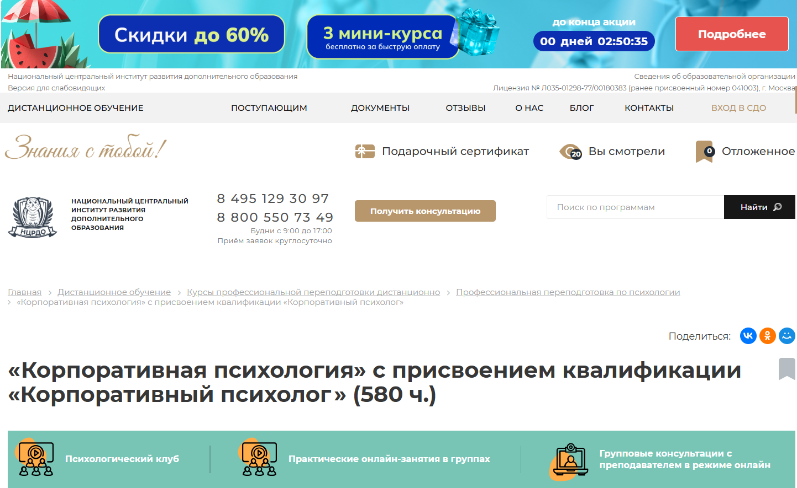
- ✅ Официальный сайт: ncrdo.ru
- 💸 Цена обучения: 24 900 ₽ (вместо 31 700 ₽).
- 💳 Рассрочка: 2 075 ₽ в месяц на 12 месяцев.
- 📚 Формат: удобный дистанционный формат — видеолекции, вебинары, задания, тесты, доступ к ЭБС и библиотеке.
- ⏳ Продолжительность: 5 месяцев (580 часов).
- 📜 Документ: диплом о профессиональной переподготовке установленного образца.
- 📝 Трудоустройство: HR-консультации и помощь в выходе на рынок труда.
- 🔷 Для кого подходит курс: для специалистов с высшим или средним профессиональным образованием, желающих освоить профессию корпоративного психолога или расширить свои профессиональные навыки в области организационного консультирования.
Особенности:
Программа профессиональной переподготовки помогает слушателям освоить профессию корпоративного психолога в дистанционном формате, без отрыва от основной деятельности. Обучение проводится в гибком режиме: тесты и задания можно сдавать в удобное время. Курс направлен на развитие практических и теоретических компетенций в области корпоративной психологии. Обеспечивается доступ к цифровой библиотеке, вебинарам и методическим материалам. Обучение проходит по стандартам ФГОС, а диплом включается в Федеральный реестр ФРДО. Для слушателей предоставляется доступ к платформам ЛитРес и БиблиоКлуб. По завершении курса выпускники смогут проводить психологическое консультирование в организациях и повышать эффективность корпоративной среды.
Чему учатся студенты:
- Изучают организационную психологию и основы корпоративной психологии
- Осваивают стресс-менеджмент и методы диагностики
- Учятся проводить оценку персонала и управлять мотивацией сотрудников
- Разбираются в конфликтологии, коучинге и принципах бизнес-консультирования
- Получают навыки консультирования руководителей и команд
Преподаватели:
- Мельникова Елена Васильевна — опыт научно-практической деятельности с 2010 года
- Тышкевич Марина Юрьевна — практикует с 2006 года
- Шевченко Дария Игоревна — работает в сфере психологии с 2018 года
- Салихова Мария Романовна — опыт с 2007 года, участие в HR-проектах
Преимущества:
- Возможность совмещать обучение с работой
- Получение диплома, который вносится в ФРДО
- Поддержка кураторов и участие в онлайн-группах
- Доступ к материалам курса навсегда
- Актуальные знания в сфере корпоративной психологии
- Практико-ориентированная программа с кейсами из реальной работы
- Помощь в карьерном развитии через HR-консультации
- Обучение проходит по государственным образовательным стандартам
Отзывы учеников:
Студенты НЦРДО высоко оценивают качество дистанционного формата, индивидуальный подход и практическую направленность курсов. Особенно часто отмечают гибкий график, доступность преподавателей и поддержку на всех этапах обучения. По данным отзывов в Яндекс, Google и 2GIS, средняя оценка курса — 4.9 из 5.
Перейти на официальный сайт курса16. Психолог-консультант с подготовкой по корпоративной психологии – Центральная академия профессиональной переподготовки и повышения квалификации кадров
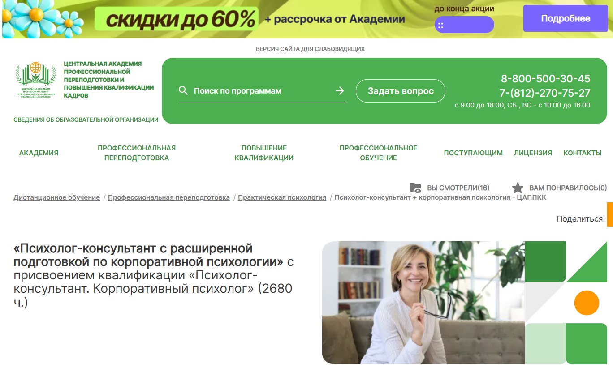
- ✅ Официальный сайт: appkk.ru
- 💸 Цена: 75 600 ₽ (со скидкой -23% от 98 300 ₽)
- 💳 Рассрочка: на 36 месяцев от 2 100 ₽/мес, партнёры — Т-банк и Сбер
- 📚 Формат: дистанционные занятия, доступ к вебинарам, домашние задания, тренинги, консультации
- ⏳ Продолжительность: 15 месяцев (2680 часов)
- 📜 Документ: диплом о профессиональной переподготовке с внесением в ФИС ФРДО
- 📝 Трудоустройство: HR-наставник помогает с резюме, консультациями, подбором вакансий
- 🔷 Для кого подходит курс: для психологов, HR-специалистов, бизнес-тренеров, руководителей, консультантов
Особенности:
Программа создана для тех, кто хочет стать специалистом в корпоративной психологии и консультировании. Обучение проходит в дистанционном формате, что позволяет совмещать его с работой и другими обязанностями. Академия предоставляет бессрочный доступ ко всем материалам курса, включая библиотеку вебинаров и учебных пособий. Поддержка студентов осуществляется ежедневно с 9:00 до 21:00, включая выходные. Выпускники получают квалификацию, позволяющую работать в любых организациях или начать частную практику. Программа включает отработку навыков через реальные кейсы, тренинги и коучинг. Все документы выдаются с внесением данных в государственный реестр. Для поступления достаточно среднего профессионального или высшего образования.
Чему учатся студенты:
- Проводить психологическое консультирование сотрудников и руководителей
- Осваивать навыки организационного консультирования
- Применять методики коучинга и психодиагностики
- Разрабатывать и проводить тренинги и семинары
- Оценивать мотивацию персонала и корпоративный климат
- Анализировать и решать внутренние конфликты в организациях
- Повышать эффективность корпоративных процессов
Преподаватели:
- Анастасия Регнер — HR-наставник, бизнес-тренер со стажем более 3 лет, участник международных HR-форумов, специалист по коммуникациям, автор обучающих программ
Преимущества:
- Возможность совмещать обучение с работой благодаря гибкому графику
- Дистанционный формат с бессрочным доступом к материалам
- Индивидуальная поддержка от куратора и HR-консультанта
- Реальные кейсы и практические инструменты для работы в корпоративной среде
- Официальный диплом с внесением данных в ФИС ФРДО
- Бесплатный доступ к библиотеке «Библиоклуб»
- Рассрочка без переплат от банков-партнёров
Отзывы учеников:
Слушатели часто отмечают удобный дистанционный формат и высокий уровень преподавания. Подчеркивают практическую направленность курса, доступность учебных материалов и полезность вебинаров. Положительные оценки касаются также помощи в трудоустройстве и качественной обратной связи от кураторов.
Перейти на официальный сайт курса17. Роль корпоративного/социального психолога в бизнесе – Moscow Business School
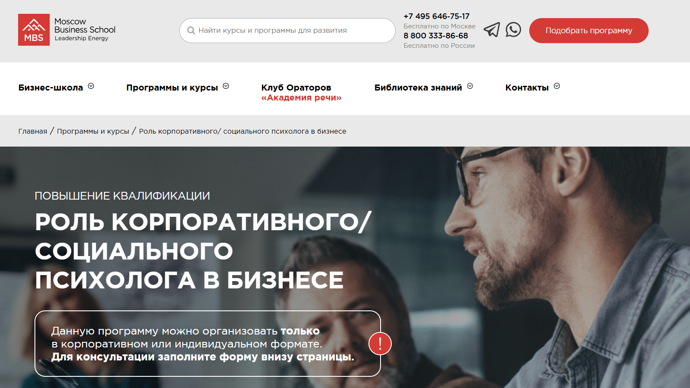
- ✅ Официальный сайт: mbschool.ru
- 💸 Цена обучения: по запросу, формируется индивидуально.
- 💳 Рассрочка: обсуждается при корпоративном обучении.
- 📚 Формат: очное и дистанционное обучение, практические задания, авторские методики, доступ к материалам на e-mail.
- ⏳ Продолжительность: 2 дня, с 10:00 до 17:30.
- 📜 Документ: удостоверение о повышении квалификации или сертификат Moscow Business School.
- 📝 Трудоустройство: повышение профессиональных компетенций для карьерного роста.
- 🔷 Для кого подходит курс: для руководителей, собственников, топ-менеджеров частных и государственных организаций, заинтересованных в развитии персонала и укреплении корпоративной среды.
Особенности:
Программа направлена на развитие компетенций в области корпоративной и организационной психологии, актуальных для бизнеса в 2025 году. Обучение проходит в удобном дистанционном или очном формате, с практической проработкой кейсов, ориентированных на бизнес-задачи. Курс помогает освоить навыки психологического консультирования, улучшения корпоративной культуры и повышения мотивации персонала. Выдается официальный документ — удостоверение или сертификат. Программа полезна для специалистов, стремящихся повысить эффективность корпоративных процессов и адаптировать команду к современным требованиям рынка. Предусмотрена возможность гибкой настройки под задачи конкретной компании.
Чему учатся студенты:
- Пониманию роли корпоративного психолога в структуре организации
- Психоэмоциональной поддержке сотрудников
- Консультированию руководителей и собственников
- Повышению эффективности бизнес-коммуникаций
- Анализу корпоративной среды и предотвращению выгорания
Преподаватели:
- Шакун Юрий Александрович — бизнес-тренер, коуч, управляющий партнёр компании «Rus-ecofoods», эксперт в B2B/B2C-продажах, консалтинге и коучинге топ-менеджмента.
Преимущества:
- Удобный дистанционный формат обучения для занятых специалистов
- Курс ведет эксперт с реальным бизнес-опытом
- Выдается официальный документ о повышении квалификации
- Возможность адаптации под корпоративные цели компании
- Интенсивная программа всего за 2 дня
- Поддержка участников после обучения — доступ к материалам
- Подходит для разных отраслей: от производства до госструктур
- Фокус на практических навыках в психологическом консультировании
Отзывы учеников:
Студенты отмечают высокий уровень преподавания, актуальность материалов и пользу от практических кейсов. Позитивно выделяют гибкий формат обучения и применение полученных знаний в работе. Также хвалят оперативную обратную связь и качественную организацию образовательного процесса.
Перейти на официальный сайт курса18. Обучение на бизнес-тренера и коуча – Образовательная платформа Skillbox
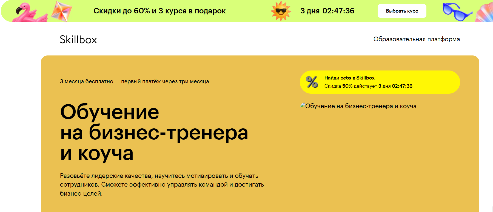
- ✅ Официальный сайт: skillbox.ru
- 💸 Цена обучения: 85 910 ₽ со скидкой 50% (старая цена 171 820 ₽)
- 💳 Рассрочка: 3 905 ₽/мес со скидкой 50% (старая цена 7 810 ₽/мес), до 22 месяцев, первый платёж через 3 месяца
- 📚 Формат: дистанционные видеолекции, практические задания, доступ к чату с экспертами, разбор домашних заданий
- ⏳ Продолжительность: 5 месяцев
- 📜 Документ: диплом о профессиональной переподготовке
- 📝 Трудоустройство: помощь в трудоустройстве и карьерное консультирование
- 🔷 Для кого подходит курс: для тех, кто хочет освоить профессию бизнес-тренера, улучшить корпоративную психологию, развить мотивацию сотрудников и повысить эффективность бизнеса
Особенности:
Курс реализуется в удобном дистанционном формате и позволяет совмещать обучение с основной деятельностью. Учащиеся проходят профессиональную переподготовку и получают диплом, подтверждающий квалификацию в сфере организационного консультирования. Обучение охватывает развитие корпоративной культуры, мотивации персонала, решение конфликтов в коллективе и управление эмоциональным состоянием команды. Программа построена на практических кейсах и включает участие в закрытом чате с экспертами. После окончания курса студенты могут применять знания для повышения эффективности корпоративных процессов и создания эффективных команд.
Чему учатся студенты:
- Мотивации сотрудников и созданию благоприятной корпоративной среды
- Управлению командами и построению эффективных коммуникаций
- Проведению коучинговых сессий и тренингов
- Предотвращению выгорания и управлению стрессом
- Разработке профессионального плана развития
- Оценке персонала и решению конфликтных ситуаций
Преподаватели:
- Евгения Лапина — бизнес-коуч ICF, CEO Coachbox, экс-руководитель проектных офисов «М.Видео» и «Эльдорадо»
- Рустам Муртазин — директор департамента кадрового консалтинга, «Альянс Консалтинг»
- Сергей Байтеряков — эксперт по управлению изменениями, «Альянс Консалтинг»
- Марина Смусь — руководитель отдела обучения и развития в EY
- Максим Фролов — сертифицированный коуч ICF, консультант по командному развитию
- Андрей Сергеев — эксперт в области конфликтологии и коммуникаций
Преимущества:
- Возможность пройти профессиональную переподготовку с присвоением квалификации
- Удобный дистанционный формат с доступом к материалам после окончания курса
- Обучение на базе практических кейсов и заданий
- Доступ к экспертам и живой обратной связи
- Выдается диплом, дающий право на официальную деятельность в сфере корпоративной психологии
- Поддержка в карьерном развитии и консультации по трудоустройству
- Развитие организационных навыков, необходимых для эффективного управления коллективом
- Возможность вернуть 13% стоимости курса через налоговый вычет
Отзывы учеников:
Выпускники отмечают высокое качество учебных материалов и понятную структуру. Особенно ценится возможность учиться в удобное время, участие в комьюнити, а также практическая направленность занятий. По отзывам, полученные знания помогают быстро адаптироваться к новым условиям работы и повышать эффективность корпоративных процессов.
Перейти на официальный сайт курса19. Профессия Корпоративный психолог — Международная школа профессий
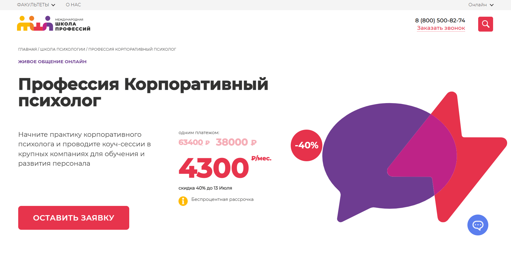
- ✅ Официальный сайт: online.videoforme.ru
- 💸 Цена: 38 000 ₽ (при единовременной оплате, скидка 40%).
- 💳 Рассрочка: 4 300 ₽ в месяц, беспроцентно.
- 📚 Формат: дистанционный формат с видеоматериалами, вебинарами, практическими заданиями и поддержкой наставников.
- ⏳ Продолжительность: 19 недель, 74 академических часа.
- 📜 Документ: диплом о профессиональной переподготовке; возможно получение международного образца.
- 📝 Трудоустройство: возможность начать консультировать уже во время обучения, помощь в выходе на рынок.
- 🔷 Для кого подходит курс: тем, кто хочет освоить профессию организационного психолога, сменить карьеру или применить знания в HR и коучинге.
Особенности:
Обучение проводится в удобном дистанционном формате с гибким графиком, что позволяет совмещать учебу с работой и другими делами. Студенты получают доступ к образовательным материалам на 3 месяца, участвуют в интерактивных сессиях и вебинарах. В программе – только прикладные знания и практические инструменты, направленные на развитие компетенций в сфере корпоративной психологии и психологического консультирования. Программа помогает освоить навыки, необходимые для создания психологически комфортной корпоративной среды, повышения мотивации персонала и эффективного взаимодействия с руководством. Уже в процессе обучения участники могут проводить психологические консультации, что позволяет быстро окупить затраты на курс. Обучение завершится выдачей диплома установленного образца.
Чему учатся студенты:
- Формировать корпоративную культуру и психологический климат в организациях
- Проводить индивидуальные и групповые коуч-сессии
- Разрабатывать и вести бизнес-тренинги
- Оценивать персонал с помощью психодиагностических инструментов
- Консультировать руководителей по управлению коллективом
- Разрешать внутрикорпоративные конфликты
- Повышать мотивацию и эффективность сотрудников
- Проводить онбординг и сопровождать карьерное развитие персонала
Преподаватели:
- Надежда Дмитриева — КПТ-терапевт, психолог, преподаватель, опыт более 3 лет, специалист по HR и клинической психологии
- Елизавета Астанина — коуч, НЛП-мастер, регрессолог, более 10 лет практики, более 300 успешных кейсов
- Александра Федорова — психолог-консультант, член Ассоциации экспертов эмоционального интеллекта, опыт более 5 лет
- Анна Маляр — коуч и преподаватель, обучила более 1000 студентов, эксперт в коучинговых технологиях
Преимущества:
- Дистанционный формат с удобным графиком и доступом из любой точки
- Курс позволяет начать практику еще до окончания обучения
- Выдается диплом, подтверждающий профессиональную квалификацию
- Поддержка наставников и преподавателей на всех этапах
- Доступ к учебным материалам и онлайн-платформе на 3 месяца
- Возможность участия в программах соцподдержки и налоговых вычетах
- Обучение проводится по стандартам дополнительного профессионального образования
- Подходит как для новичков, так и для специалистов HR и коучинга
Отзывы учеников:
Студенты чаще всего отмечают практическую направленность занятий, квалифицированную поддержку кураторов и возможность совмещать обучение с работой. Высоко оцениваются формат обучения и реальные кейсы из корпоративной практики. Также часто упоминается возможность быстро начать консультирование и выйти на доход еще до окончания курса.
Перейти на официальный сайт курса20. Бизнес-психология — Учебный центр АПОК
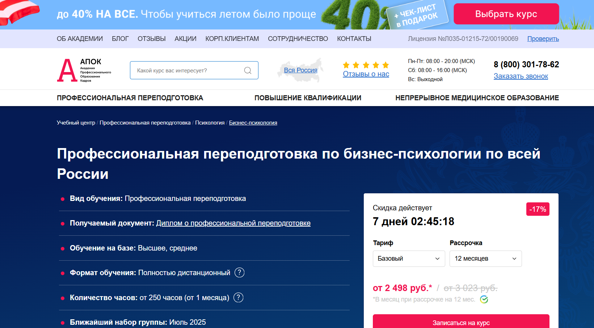- ✅ Официальный сайт: apokdpo.ru
- 💸 Цена: от 29 980 ₽ со скидкой 17% .
- 💳 Рассрочка: на 12 месяцев, от 2 498 ₽/мес без переплат.
- 📚 Формат: дистанционные курсы с видеолекциями, тестами, заданиями и возможностью задать вопросы преподавателю (в премиум-пакете).
- ⏳ Продолжительность: от 250 академических часов (от 1 месяца).
- 📜 Документ: диплом о профессиональной переподготовке с регистрацией в ФИС ФРДО.
- 📝 Трудоустройство: помогает в карьерном росте и подтверждении квалификации.
- 🔷 Для кого подходит курс: для специалистов с высшим или средним образованием, желающих работать корпоративным психологом или в области организационного консультирования.
Особенности:
Программа разработана для освоения практических навыков в сфере корпоративной психологии и направлена на развитие профессиональных компетенций в области организационной среды. Студенты проходят обучение полностью дистанционно, что позволяет совмещать его с работой. Диплом действует на всей территории РФ, выдается после успешного завершения курса. Программа ориентирована на применение психологических инструментов в бизнесе — от управления персоналом до оценки эффективности корпоративных коммуникаций. Обучение проходит в удобном формате с гибким графиком. Присутствует поддержка кураторов и обратная связь. По завершении курса выпускники получают официальные документы с госрегистрацией.
Чему учатся студенты:
- Психологии управления персоналом и лидерству
- Психодиагностике и консультированию в бизнесе
- Техникам коучинга и мотивации сотрудников
- Управлению конфликтами в коллективе
- Формированию корпоративной культуры
- Психологическим основам продаж и имиджа
- Психологии денег и стрессоустойчивости
Преподаватели:
- ФИО преподавателей на сайте не указаны, но заявлено участие экспертов-практиков с опытом в сфере корпоративной и организационной психологии
Преимущества:
- Удобный дистанционный формат — учиться можно из любой точки России
- Подходит для совмещения с работой благодаря гибкому графику
- Доступ к материалам и тестам на всей длине курса
- Официальный диплом о переподготовке регистрируется в ФИС ФРДО
- Возможность индивидуальных консультаций с преподавателем (в премиум-тарифе)
- Поддержка менеджеров и персональная программа по запросу
- Бесплатная доставка документов Почтой России
- Скидки до 40% по акциям для семей и корпоративных клиентов
Отзывы учеников:
Студенты отмечают качественный учебный контент, удобный дистанционный формат и понятную структуру курса. Большинство выделяют возможность совмещать обучение с работой и полезность практических заданий. Положительно оценивается поддержка менеджеров и оперативная доставка дипломов.
Перейти на официальный сайт курса21. Корпоративная психология с присвоением квалификации Корпоративный психолог – Учебный центр «НЦПО»
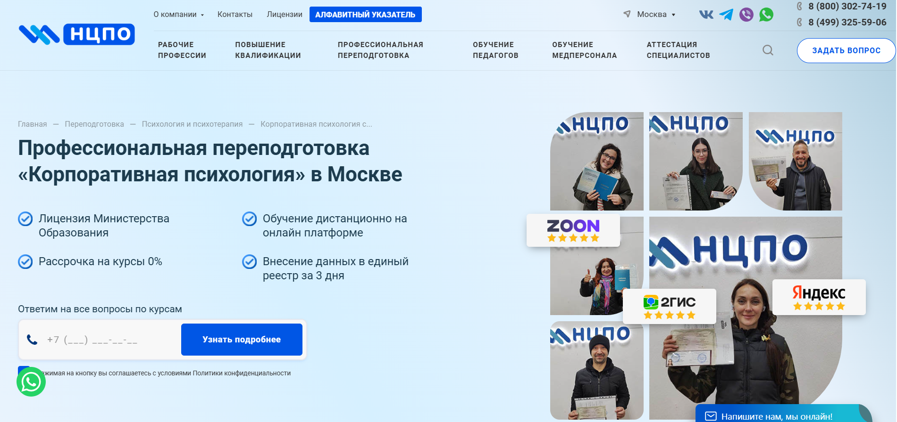
- ✅ Официальный сайт: ncpo.ru
- 💸 Цена обучения: от 19 800 ₽ (скидка 3 000 ₽ при оплате в день заявки)
- 💳 Рассрочка: 0%, от 1 650 ₽ в месяц
- 📚 Формат: дистанционный формат обучения, онлайн-лекции, тестирование, методические материалы, доступ 24/7
- ⏳ Продолжительность: от 250 до 1600+ академических часов
- 📜 Документ: диплом о профессиональной переподготовке, внесение в реестр ФРДО
- 📝 Трудоустройство: способствует карьерному росту, повышению зарплаты и получению новой должности
- 🔷 Для кого подходит курс: специалисты с дипломом СПО или ВО, желающие освоить профессию или пройти переаттестацию
Особенности:
Курс ориентирован на подготовку корпоративных психологов, способных решать задачи в сфере организационного консультирования, управления персоналом и повышения мотивации сотрудников. Дистанционный формат позволяет совмещать обучение с работой, не теряя доступа к учебным материалам даже после окончания курса. Программа обучения включает весь спектр знаний и навыков, необходимых для работы в корпоративной среде: от базовой теории до применения психологических инструментов в бизнесе. Выдается официальный диплом с государственной регистрацией. Все документы оформляются на основании договора, а обучение ведется по лицензии Министерства образования. Курсы проходят в удобном онлайн-формате, без привязки ко времени.
Чему учатся студенты:
- Проводить психологическое консультирование в корпоративной среде
- Анализировать и улучшать психологический климат в коллективе
- Оказывать поддержку сотрудникам и руководителям
- Осваивать методы мотивации персонала
- Применять практические инструменты в работе с командами
- Работать с конфликтами и строить эффективные коммуникации
Преподаватели:
- Терешков Александр Леонидович — генеральный директор УЦ «НЦПО»
- Грезнева Диана — преподаватель направления психологии
- Малкова Анна — эксперт по дистанционному обучению и практическим занятиям
Преимущества:
- Официальная лицензия Министерства образования
- Дистанционные курсы в удобном формате с доступом 24/7
- Выдача диплома установленного образца с внесением в госреестр
- Беспроцентная рассрочка и скидка при быстрой оплате
- Поддержка кураторов и менеджеров на всех этапах обучения
- Возможность начать обучение без профильного опыта
- Программа актуальна под реальные требования работодателей
- Гарантированное оформление документов по договору
Отзывы учеников:
Студенты чаще всего отмечают доступность дистанционного формата, практическую направленность курса и быстрый документооборот. Особо подчеркивают качество преподавания, поддержку от кураторов и юридическую прозрачность условий обучения. Выпускники довольны возможностью совмещать учебу с работой и реальным влиянием диплома на карьерный рост.
Перейти на официальный сайт курсаКто такой корпоративный психолог?
Корпоративный психолог — это специалист в области психологии, работающий внутри компании или организации с целью улучшения психологического климата, повышения мотивации сотрудников и предотвращения профессионального выгорания. Его основная задача — создать комфортные условия для работы, где каждый сотрудник чувствует себя услышанным и понятым.
Что делают бизнес-психологи и чем занимаются?
Работа корпоративного психолога включает широкий спектр задач, направленных на улучшение внутренней среды компании.
- Проведение индивидуальных и групповых консультаций сотрудников.
- Диагностика эмоционального состояния команды и отдельных работников.
- Разработка программ по управлению стрессом и профилактике выгорания.
- Анализ причин конфликтов и помощь в их разрешении.
- Участие в формировании корпоративной культуры и ценностей.
- Сопровождение процессов увольнений, адаптации и карьерного роста сотрудников.
Таким образом, корпоративный психолог работает не только с проблемами, но и с развитием сотрудников, способствуя росту их эффективности и удовлетворенности.
Что должен знать и уметь корпоративный психолог?
Профессионал в этой области должен обладать как теоретическими знаниями, так и практическими навыками.
- Глубокие знания в области психологии личности, конфликтологии и групповой динамики.
- Умение проводить психологическую диагностику и интерпретацию результатов.
- Навыки ведения индивидуальных консультаций и тренингов.
- Понимание бизнес-процессов и корпоративной структуры.
- Коммуникабельность, эмпатия и этичность.
Также важны умение сохранять конфиденциальность и работать с людьми разных уровней — от линейного персонала до топ-менеджеров.
Востребованность и зарплаты бизнес-психологов в России
С каждым годом всё больше компаний осознают важность ментального благополучия сотрудников. В 2025 году спрос на корпоративных психологов в России стабильно растет.
- В крупных городах корпоративный психолог — уже не редкость, а стандарт.
- Востребованы специалисты в IT, медицине, образовании, ритейле.
- Зарплаты варьируются от 70 000 до 180 000 рублей в месяц в зависимости от региона, уровня компании и опыта.
Дополнительно специалисты могут зарабатывать, проводя тренинги, коучинг и внешний консалтинг.
Как стать корпоративным психологом и где учиться?
Чтобы начать карьеру в этой области, необходима профильная подготовка.
- Получить высшее образование по направлению «Психология» в вузах (например, МГУ, ВШЭ, СПбГУ).
- Пройти дополнительную подготовку в области организационной психологии или HR-консалтинга.
- Развивать практические навыки на стажировках и в центрах корпоративного развития.
- Постоянно повышать квалификацию на курсах и тренингах по soft skills, психодиагностике, коучингу.
Для получения конкурентного преимущества желательно также знание английского языка и международных стандартов в сфере корпоративного здоровья.
Где работает корпоративный психолог?
Корпоративный психолог может трудоустроиться в:
- Крупные компании и корпорации.
- HR-отделы и департаменты по развитию персонала.
- Консалтинговые агентства.
- Образовательные учреждения и медицинские организации.
Также возможна работа в формате фриланса или проектной деятельности для разных организаций.
Преимущества профессии бизнес-психолога
- Востребованность на рынке труда и стабильный доход.
- Интересная и разнообразная работа с людьми.
- Возможность влиять на корпоративную культуру и климат.
- Развитие как личностное, так и профессиональное.
Профессия сочетает в себе элементы помощи, аналитики и бизнеса, что делает ее уникальной и привлекательной.
Кто такой корпоративный психолог и зачем нужно обучение по этой профессии?
Корпоративный психолог — это специалист, занимающийся психологическим консультированием сотрудников внутри организаций. Обучение корпоративного психолога необходимо для освоения профессиональных навыков, повышения эффективности корпоративных процессов и улучшения психологического климата в коллективе.
Какие задачи решает бизнес-психолог в организации?
Основные задачи корпоративного психолога включают мотивацию персонала, помощь в решении внутренних конфликтов, оценку персонала, проведение тренингов и консультаций. Это способствует развитию корпоративной культуры и повышению эффективности бизнеса.
Кому подойдет дистанционное обучение на корпоративного психолога?
Дистанционные курсы подойдут людям с высшим или средним профессиональным образованием, HR-специалистам, практикующим психологам, а также тем, кто хочет освоить новую профессию в удобном дистанционном формате.
Какие форматы обучения доступны по корпоративной психологии?
Доступны разные форматы обучения: дистанционные курсы, вебинары, видеоуроки, онлайн-тренинги. Это удобный формат обучения с возможностью совмещать учебу с работой.
Чем отличается организационный психолог от корпоративного?
Организационный психолог работает с организационной средой и структурой бизнеса, а корпоративный — больше сосредоточен на внутреннем климате коллектива, мотивации и взаимодействии сотрудников. Обучение охватывает обе сферы — организационную и корпоративную психологию.
Какие знания и навыки получают слушатели курсов по бизнес-психологии?
Слушатели получают теоретические знания и практические навыки по психологическому консультированию, управлению конфликтами, мотивации персонала, оценке эффективности сотрудников и развитию корпоративной культуры.
Какая квалификация присваивается после прохождения обучения?
После успешного завершения курса слушателю выдается диплом о профессиональной переподготовке с присвоением квалификации «Корпоративный психолог». Этот документ подтверждает право на ведение профессиональной деятельности в этой сфере.
Можно ли совмещать обучение по бизнес-психологии с работой?
Да, дистанционное обучение позволяет совмещать обучение с работой, благодаря удобному графику и возможности изучать материалы в любом удобном темпе.
Как проходит обучение корпоративной психологии и какие этапы включает?
Обучение проходит в дистанционном формате и включает теоретические модули, практические занятия, тестирования, написание итоговой аттестационной работы и получение диплома.
Какие темы входят в программу обучения по корпоративной психологии?
Программа включает: основы организационной и корпоративной психологии, психологическое консультирование, мотивация сотрудников, оценка и развитие персонала, управление стрессом, управление конфликтами, методы диагностики.
Какие преимущества у дистанционного формата обучения?
Удобный дистанционный формат позволяет обучаться в любом месте, экономить время на дорогу, получать доступ к учебным материалам в любое время и освоить профессию в комфортном темпе.
Какие дипломы получают выпускники после окончания курса по бизнес-психологии?
После окончания обучения выпускники получают официальный диплом государственного образца, подтверждающий профессиональную переподготовку и <strongновую квалификацию «Корпоративный психолог».
Можно ли пройти курсы повышения квалификации по корпоративной психологии?
Да, доступны курсы повышения квалификации для уже работающих специалистов. Они помогают освоить новые методы и повысить эффективность корпоративных процессов.
Сколько длится обучение на бизнес-психолога?
Продолжительность обучения зависит от программы — обычно от 3 до 12 месяцев. Курсы организованы так, чтобы учебный процесс проходил удобно и не мешал текущей занятости слушателя.
Какие компетенции формируются у выпускников?
Выпускники освоят навыки организационного консультирования, психологической поддержки сотрудников, развития мотивации, оценки корпоративной культуры и внедрения психологических инструментов в работу компании.
Как корпоративный психолог помогает бизнесу?
Корпоративный психолог улучшает психологический климат, способствует развитию эффективных команд, снижает уровень стресса, повышает мотивацию сотрудников и в целом повышает эффективность корпоративных процессов.
Какие методы применяются в работе бизнес-психолога?
В работе используются методы психологического консультирования, диагностики, психологической коррекции, тренинги по развитию soft skills, оценка эффективности сотрудников, методы коучинга и фасилитации.
Можно ли начать обучение без психологического образования?
Да, многие дистанционные курсы по корпоративной психологии рассчитаны на людей без профильного образования. Программа обучения включает все необходимые основы для освоения профессии с нуля.
Почему стоит пройти профессиональную переподготовку по корпоративной психологии именно сейчас?
Профессия корпоративного психолога становится все более востребованной в современном бизнесе. Профессиональная переподготовка открывает новые карьерные перспективы и возможность работать в любой компании, независимо от сферы.
------------------------------------------------
Реклама. Информация о рекламодателе по ссылкам в статье.